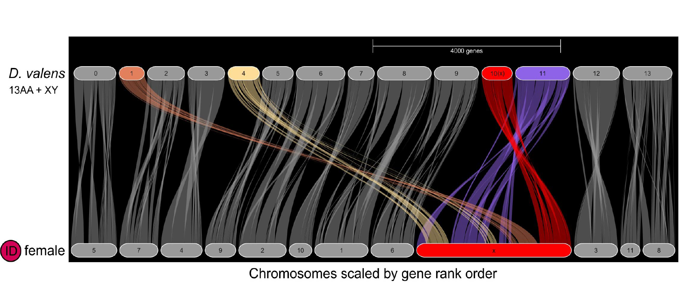
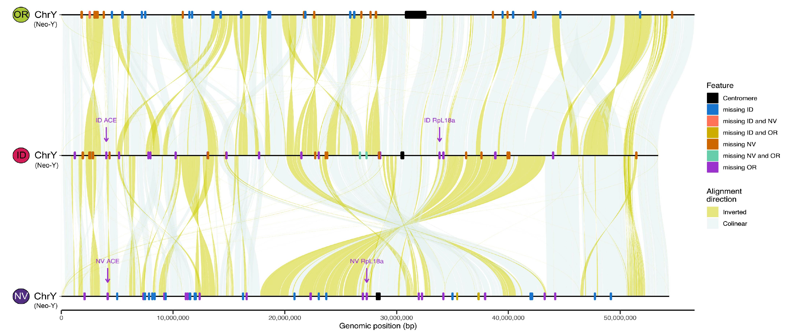
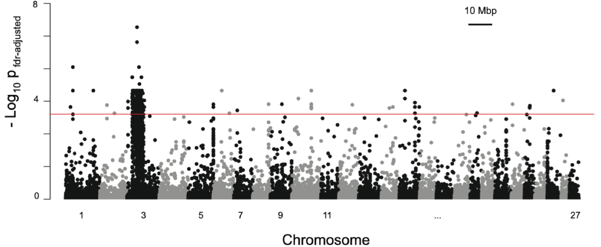
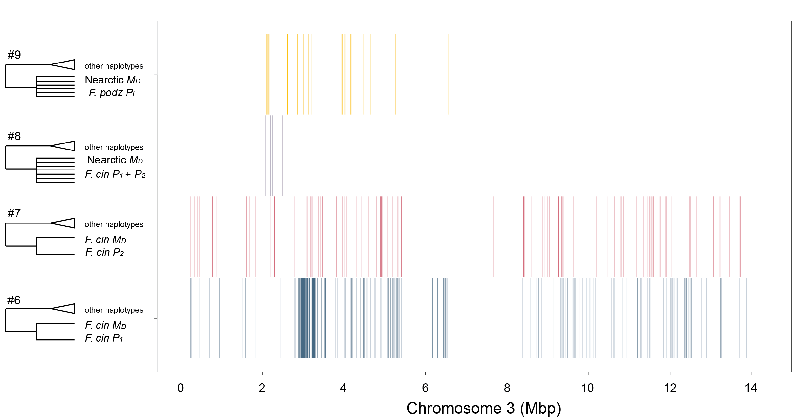

Research

The mountain pine beetle neo-X formed from three autosomal fusions to the ancestral-X. Figure 3A from Lagunas-Robles et al. 2026 Evolution Letters.

There are striking diversity between the three neo-Ys in Dendroctonus ponderosae. There are dramatic rearragements and unique gene losses between them. Figure 5D from Lagunas-Robles et al. 2026 Evolution Letters.
Sex Chromosome Evolution
Most of our understanding of sex chromosomes come from static systems, where there isn’t much change occurring. New, or “neo,” sex chromosomes allow us to understand the early stages of genomic evolution since old sex chromosomes can fuse to autosomes allowing us to study early stages of sex chromosome evolution. My colleagues and I reviewed the mammal karyotype literature and documented over 150 variant sex chromosome systems in mammals and wrote about the role of conflict in the evolution and maintenance of neo-sex chromosomes.
Currently in my postdoc, I am working to understand the dynamic and complex neo-sex chromosomes of the mountain pine beetle (Dendroctonus ponderosae). We have identified that the neo-sex chromosomes comprise of three autosomal fusions to the ancestral-X. These degenerating neo-Ys have numerous structural differences and unique gene losses, but still retain a remarkable amount of gene content. Ongoing work includes trying to understand gene regulation of these neo-sex chromosomes
Evolution of Complex Traits
Complex traits are often controlled by supergenes. Supergenes are genomic regions containing two or more linked alleles that determine discrete traits and are under linkage such that they are inherited as single Mendelian units. Oftentimes, supergenes are inversions, but other structural variants, fall under the supergene umbrella. Sex chromosomes are considered a special case of a supergene and much of the theoretical literature for supergene evolution builds on what we know about sex chromosome evolution.
Using population genomic approaches, I have studied supergenes within the ant genus Formica. There are multiple supergene haplotypes controlling different phenotypes, including colony queen number (social supergene) and the offspring sex ratio in a colony (sex ratio supergene). Representative publications include discovering a sex ratio supergene linked to the social supergene in two Formica species and identifying multiple origins of the haplotype associated with colony queen production (MD haplotype). Some of my ongoing work includes understanding how these supergenes are maintained in different populations and how they interact when they are present in the same population.
I have a general interest in understanding the genetics underlying offspring sex ratio. If you are interested in talking about this, please do not hesitate to reach out!

GWAS in Formica glacialis revealed colony production of future queens is associated with the MD haplotype on chromosome 3. Figure S1 from Lagunas-Robles et al. 2021 PNAS.

Windowed SNP analyses of the Formica MD and P haplotypes revealed two recombinant origins, one Nearctic and one Palearctic. Figure 4 from Lagunas-Robles et al. 2026 MBE.